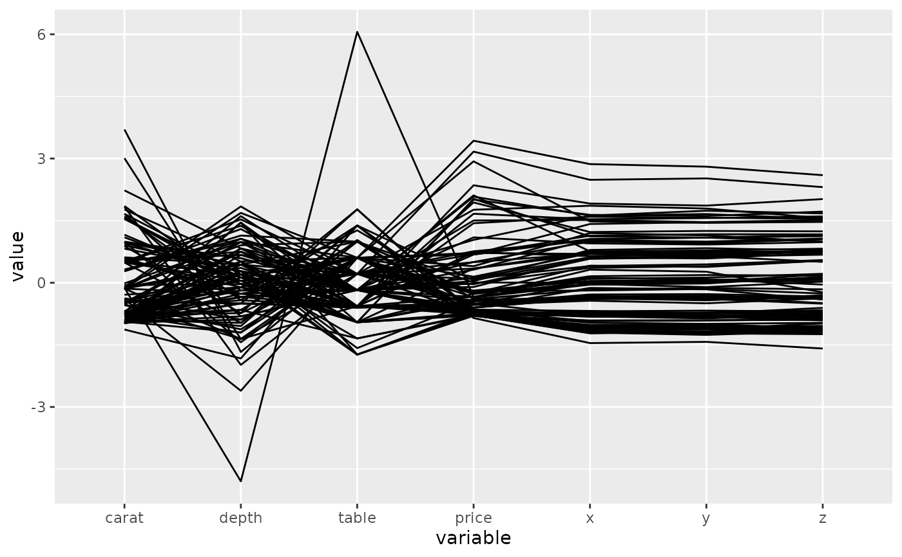
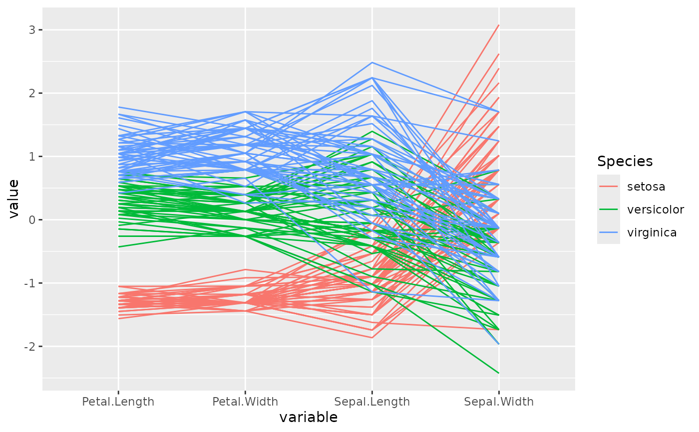
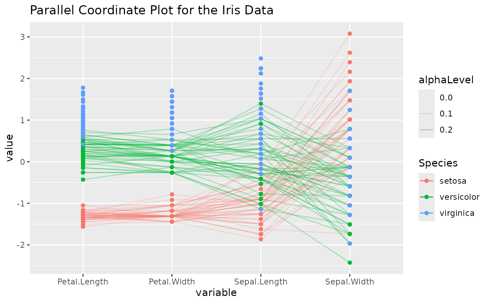
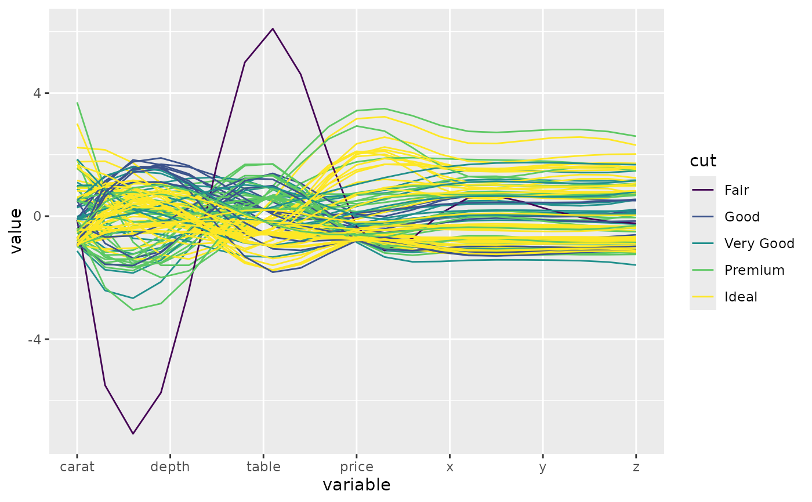

A function for plotting static parallel coordinate plots, utilizing
the ggplot2 graphics package.
ggparcoord( data, columns = 1:ncol(data), groupColumn = NULL, scale = "std", scaleSummary = "mean", centerObsID = 1, missing = "exclude", order = columns, showPoints = FALSE, splineFactor = FALSE, alphaLines = 1, boxplot = FALSE, shadeBox = NULL, mapping = NULL, title = "" )
Arguments
| data | the dataset to plot |
|---|---|
| columns | a vector of variables (either names or indices) to be axes in the plot |
| groupColumn | a single variable to group (color) by |
| scale | method used to scale the variables (see Details) |
| scaleSummary | if scale=="center", summary statistic to univariately center each variable by |
| centerObsID | if scale=="centerObs", row number of case plot should univariately be centered on |
| missing | method used to handle missing values (see Details) |
| order | method used to order the axes (see Details) |
| showPoints | logical operator indicating whether points should be plotted or not |
| splineFactor | logical or numeric operator indicating whether spline interpolation should be used. Numeric values will multiplied by the number of columns, |
| alphaLines | value of alpha scaler for the lines of the parcoord plot or a column name of the data |
| boxplot | logical operator indicating whether or not boxplots should underlay the distribution of each variable |
| shadeBox | color of underlying box which extends from the min to the
max for each variable (no box is plotted if |
| mapping | aes string to pass to ggplot object |
| title | character string denoting the title of the plot |
Value
ggplot object that if called, will print
Details
scale is a character string that denotes how to scale the variables
in the parallel coordinate plot. Options:
std: univariately, subtract mean and divide by standard deviationrobust: univariately, subtract median and divide by median absolute deviationuniminmax: univariately, scale so the minimum of the variable is zero, and the maximum is oneglobalminmax: no scaling is done; the range of the graphs is defined by the global minimum and the global maximumcenter: useuniminmaxto standardize vertical height, then center each variable at a value specified by thescaleSummaryparamcenterObs: useuniminmaxto standardize vertical height, then center each variable at the value of the observation specified by thecenterObsIDparam
missing is a character string that denotes how to handle missing
missing values. Options:
exclude: remove all cases with missing valuesmean: set missing values to the mean of the variablemedian: set missing values to the median of the variablemin10: set missing values to 10% below the minimum of the variablerandom: set missing values to value of randomly chosen observation on that variable
order is either a vector of indices or a character string that denotes how to
order the axes (variables) of the parallel coordinate plot. Options:
(default): order by the vector denoted bycolumns(given vector): order by the vector specifiedanyClass: order variables by their separation between any one class and the rest (as opposed to their overall variation between classes). This is accomplished by calculating the F-statistic for each class vs. the rest, for each axis variable. The axis variables are then ordered (decreasing) by their maximum of k F-statistics, where k is the number of classes.allClass: order variables by their overall F statistic (decreasing) from an ANOVA withgroupColumnas the explanatory variable (note: it is required to specify agroupColumnwith this ordering method). Basically, this method orders the variables by their variation between classes (most to least).skewness: order variables by their sample skewness (most skewed to least skewed)Outlying: order by the scagnostic measure, Outlying, as calculated by the packagescagnostics. Other scagnostic measures available to order by areSkewed,Clumpy,Sparse,Striated,Convex,Skinny,Stringy, andMonotonic. Note: To use these methods of ordering, you must have thescagnosticspackage loaded.
Author
Jason Crowley, Barret Schloerke, Di Cook, Heike Hofmann, Hadley Wickham
Examples
# small function to display plots only if it's interactive p_ <- GGally::print_if_interactive # use sample of the diamonds data for illustrative purposes data(diamonds, package="ggplot2") diamonds.samp <- diamonds[sample(1:dim(diamonds)[1], 100), ] # basic parallel coordinate plot, using default settings p <- ggparcoord(data = diamonds.samp, columns = c(1, 5:10)) p_(p)# this time, color by diamond cut p <- ggparcoord(data = diamonds.samp, columns = c(1, 5:10), groupColumn = 2) p_(p)# underlay univariate boxplots, add title, use uniminmax scaling p <- ggparcoord(data = diamonds.samp, columns = c(1, 5:10), groupColumn = 2, scale = "uniminmax", boxplot = TRUE, title = "Parallel Coord. Plot of Diamonds Data") p_(p)# utilize ggplot2 aes to switch to thicker lines p <- ggparcoord(data = diamonds.samp, columns = c(1, 5:10), groupColumn = 2, title ="Parallel Coord. Plot of Diamonds Data", mapping = ggplot2::aes(size = 1)) + ggplot2::scale_size_identity() p_(p)# basic parallel coord plot of the msleep data, using 'random' imputation and # coloring by diet (can also use variable names in the columns and groupColumn # arguments) data(msleep, package="ggplot2") p <- ggparcoord(data = msleep, columns = 6:11, groupColumn = "vore", missing = "random", scale = "uniminmax") p_(p)# center each variable by its median, using the default missing value handler, # 'exclude' p <- ggparcoord(data = msleep, columns = 6:11, groupColumn = "vore", scale = "center", scaleSummary = "median") p_(p)# with the iris data, order the axes by overall class (Species) separation using # the anyClass option p <- ggparcoord(data = iris, columns = 1:4, groupColumn = 5, order = "anyClass") p_(p)# add points to the plot, add a title, and use an alpha scalar to make the lines # transparent p <- ggparcoord(data = iris, columns = 1:4, groupColumn = 5, order = "anyClass", showPoints = TRUE, title = "Parallel Coordinate Plot for the Iris Data", alphaLines = 0.3) p_(p)# color according to a column iris2 <- iris iris2$alphaLevel <- c("setosa" = 0.2, "versicolor" = 0.3, "virginica" = 0)[iris2$Species] p <- ggparcoord(data = iris2, columns = 1:4, groupColumn = 5, order = "anyClass", showPoints = TRUE, title = "Parallel Coordinate Plot for the Iris Data", alphaLines = "alphaLevel") p_(p)## Use splines on values, rather than lines (all produce the same result) columns <- c(1, 5:10) p <- ggparcoord(diamonds.samp, columns, groupColumn = 2, splineFactor = TRUE) p_(p)p <- ggparcoord(diamonds.samp, columns, groupColumn = 2, splineFactor = 3) p_(p)splineFactor <- length(columns) * 3 p <- ggparcoord(diamonds.samp, columns, groupColumn = 2, splineFactor = I(splineFactor)) p_(p)